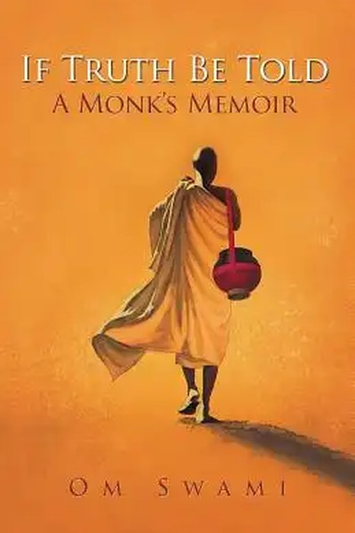

Library › Self-Improvement
If Truth Be Told — Summary & Key Lessons

A monk's honest memoir of leaving it all.
📖 OPEN THE FULL INTERACTIVE BREAKDOWN →🌐 Read it in Hindi, Hinglish, Gujarati, Tamil & 22 more languages — free, with audio.
💡 The Big Idea
Om Swami — who left a successful software career, an Australian lifestyle and a marriage to become a monk in the Himalayas — writes the story of his own search: from a restless corporate life to the austerities of the mountains, from the trauma of his mother's death to the discipline of meditation that eventually grounded him. The book is brutally honest about the monk's path: the loneliness, the doubt, the physical hardship, and the slow construction of inner peace. Its lesson: escape is not a place; it is a practice — and truth begins with telling your own story honestly, including the parts that don't flatter you.
🧠 The 6 Key Lessons
Lesson 1: The Corporate Escape: Success That Felt Empty
Part 1: The Restlessness
Om Swami had the 'successful' life — a thriving software business, money, comfort — and felt profoundly empty. His diagnosis: he had optimized for achievement and under-invested in meaning. The lesson: the achievement treadmill is real, and success without inner work hollows out. The warning is not 'quit your job' but 'audit your life's architecture': are you building a life you want to live, or a resume you want to show? The person who only asks 'what's next?' never asks 'why any of this?' — and the second question is the one that matters.
📖 Example: At the height of his business success, Om Swami found himself planning his exit — not from failure but from emptiness. The career was working; the life wasn't. Read the full example →
⚡ Do this: Run the architecture audit: separate your life into 'building for show' and 'building for living'. Rebalance one hour a day toward the second.
Lesson 2: The Truth of the Path: Renunciation Is Not an Escape
Part 2: The Renunciation
The book's honesty: becoming a monk did not instantly solve his problems — it replaced corporate stress with Himalayan hardship, loneliness and doubt. The lesson: there is no external escape; every path carries its own weight. The person who changes geography, job or relationship expecting relief without inner change relocates the problem. The real renunciation is internal — releasing the attachments and stories that drive suffering, wherever you live. Change your location if useful, but never confuse the move with the work. The work is inner; the path is just the context.
📖 Example: In the mountains, Om Swami faced cold, isolation and the same restless mind he'd had in the office — the problems had followed him because he was carrying them. Read the full example →
⚡ Do this: Identify one 'escape' you're planning (job, city, relationship) and ask: 'What will I still be carrying there?' Address that first, even while making the move.
Lesson 3: The Discipline of Sadhana: Daily Practice Beats Dramatic Moments
Part 3: The Practice
Om Swami's transformation came not from a dramatic awakening but from years of daily meditation — 'sadhana' — the unglamorous repetition of inner work. The lesson: inner change is built like muscle, by consistent reps, not by epiphanies. The person who meditates 20 minutes daily for a year transforms more than the one who attends a month-long retreat and stops. The same law governs every skill: the daily practice is the path; the dramatic moment is just a milestone on it. Choose a practice you can sustain, not one you can admire.
📖 Example: Om Swami's early meditations were chaotic — restless, sleepy, doubtful — and only thousands of sessions later did the stillness arrive. The consistency, not the intensity, built the peace. Read the full example →
⚡ Do this: Choose one inner practice (meditation, journaling, breathwork) and commit to a daily 20-minute slot. Judge it by consistency for 30 days, not by experience.
Lesson 4: Grief as the Teacher: The Mother's Death
Part 4: The Loss
The book's emotional core is the death of Om Swami's mother — the grief that drove him inward and, paradoxically, taught him the most about impermanence and love. His lesson: loss is the curriculum nobody volunteers for, and the people who process it consciously — rather than numbing or distracting — emerge with depth. The lesson isn't to seek grief but to not waste it: the pain of loss, faced, teaches what nothing else can about what matters. The person who lets grief do its work becomes more human; the one who runs from it stays frozen. Process the loss; don't perform around it.
📖 Example: His mother's death shattered Om Swami's plans and sent him to the mountains — and years later he could see that the grief had carved the space where his real life began. Read the full example →
⚡ Do this: If you carry unprocessed loss, give it one honest session this month — write the letter you never sent, or sit with the memory without distraction. Let the grief work.
Lesson 5: Wealth and Detachment: The Business Lessons of a Monk
Part 5: The Paradox
Om Swami's unusual perspective: having built wealth and then left it, he can see money's true place — a tool, not a meaning. His lesson: you can be detached without being poor; detachment is not deprivation but non-addiction. The person who can use money without being used by it — earn it, spend it, lose it, release it — has mastered the relationship that most people never examine. The practical route: build security, then keep testing your attachment — give, invest, and periodically ask 'would I still be me without this?' The monk's wealth lesson is freedom from the fear of losing it.
📖 Example: Om Swami built a business, gave it away, and later returned to practical life without being owned by either state — the wealth was a tool he could hold or release at will. Read the full example →
⚡ Do this: Test your attachment this month: give something away that you value, or ask the question 'who am I without this?' Write the honest answer.
Lesson 6: Your Own Truth: The Book's Final Command
Part 6: The Truth
The title's command: 'if truth be told' — tell your own truth. Om Swami's book is deliberately unflattering — his struggles, his doubts, his humanity — because he believes honesty is the foundation of any real path. The lesson: the story you tell yourself about yourself is either your prison or your release. The person who lies to themselves about their motives, their pain, their patterns builds on sand; the one who tells the truth builds on rock. The practice: write your story without self-flattery, read it without defensiveness, and let the honest version steer the next chapter.
📖 Example: The book's power is precisely its candour — the guru who admits his fears and failures is more credible than the saint who performs perfection. The truth was the teaching. Read the full example →
⚡ Do this: Write one page of your story with total honesty — the motive you hide, the pattern you repeat, the truth you avoid. Read it twice. Let it inform one decision this week.
✅ 5-Step Action Plan
- Run the architecture audit — rebalance toward 'building for living'.
- Identify what you'll still be carrying into your next 'escape'.
- Commit to a daily 20-minute inner practice for 30 days.
- Give one honest session to unprocessed loss this month.
- Write one page of your story with total honesty.
💬 Best Quotes from If Truth Be Told
- “There is no external escape — every path carries its own weight.”
- “Daily practice beats dramatic moments; the reps build the peace.”
- “The truth you tell about yourself is either your prison or your release.”
Interactive version: mark lessons as read, listen in your language, share quote cards.